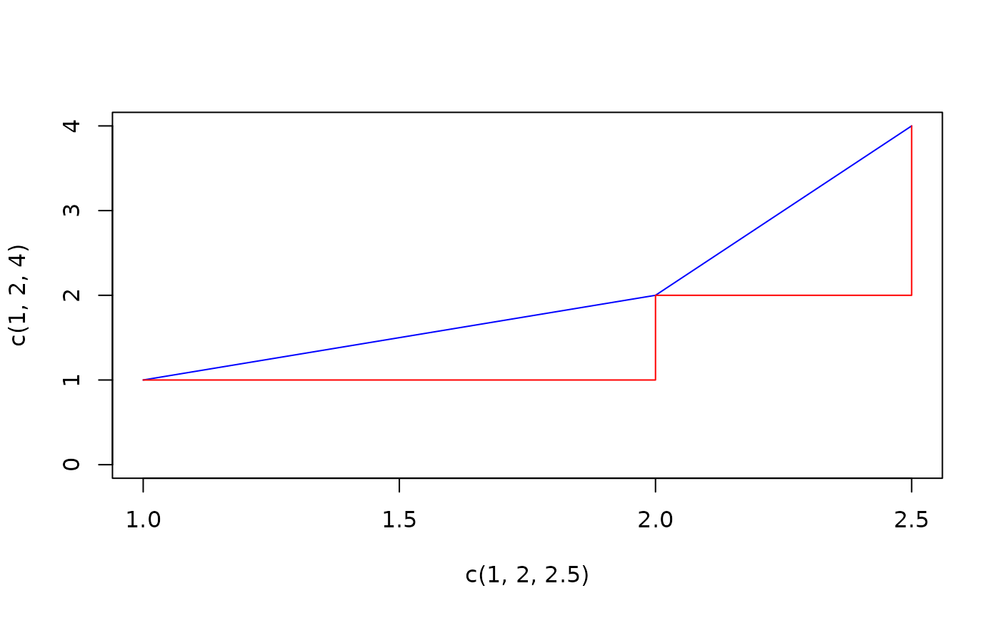

AUC.RdCalculate the area under the curve with a naive algorithm and with a more elaborated spline approach. The curve must be given by vectors of xy-coordinates.
the xy-points of the curve
The type of interpolation. Can be "trapezoid" (default), "step", "linear" or "spline".
The value "spline" results in the area under the natural cubic spline interpolation.
The value from where to start calculating the area under the curve. Defaults to the smallest x value.
The value from where to end the calculation of the area under the curve. Defaults to the greatest x value.
A logical value that determines if negative
areas should be added to the total area under the curve. By
default the auc function subtracts areas that have negative y
values. Set absolutearea=TRUE to _add_ the absolute value of the negative areas to the total area. Ignored if method is not spline.
an integer telling how many subdivisions should be used for integrate (for non-linear approximations). Ignored if method is not spline.
logical, indicating whether NA values should be stripped before the computation proceeds. In this case only the complete.cases of x and y will be used. na.rm defaults to FALSE.
additional arguments passed on to approx (for linear approximations). In particular rule can be set to determine how values outside the range of x is handled.
If method is set to "trapezoid" then the curve is formed by connecting all points by a direct line (composite trapezoid rule). If "step" is chosen then a stepwise connection of two points is used.
For linear interpolation the AUC() function computes the area under the curve
using the composite trapezoid rule. For area under a spline interpolation,
AUC() uses the splinefun function in combination with the integrate to
calculate a numerical integral.
The AUC() function can handle unsorted time
values (by sorting x), missing observations, ties for the x values (by ignoring duplicates), and integrating over
part of the area or even outside the area.
Numeric value of the area under the curve.
AUC(x=c(1,3), y=c(1,1))
#> [1] 2
AUC(x=c(1,2,3), y=c(1,2,4), method="trapezoid")
#> [1] 4.5
AUC(x=c(1,2,3), y=c(1,2,4), method="step")
#> [1] 3
plot(x=c(1,2,2.5), y=c(1,2,4), type="l", col="blue", ylim=c(0,4))
lines(x=c(1,2,2.5), y=c(1,2,4), type="s", col="red")

x <- seq(0, pi, length.out=200)
AUC(x=x, y=sin(x))
#> [1] 1.999958
AUC(x=x, y=sin(x), method="spline")
#> [1] 2